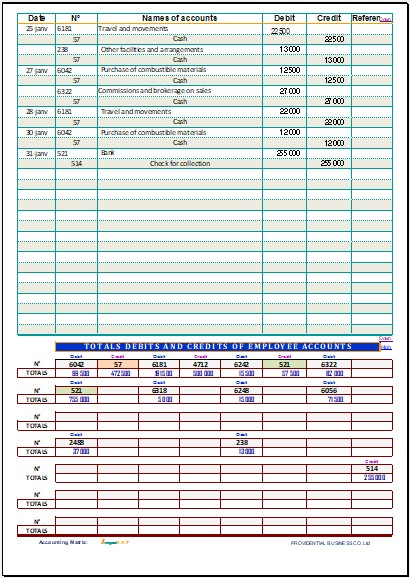

Overview of the VERSO & TOTALS page
This screenshot illustrates the VERSO & TOTALS page of the accounting matrix. It continues the entries started on the RECTO page up to 72 lines and additionally displays the automatic totals area.
An essential page for the continuity of accounting records and the instant tracking of accounts.
Download the English version of IMPUMAT